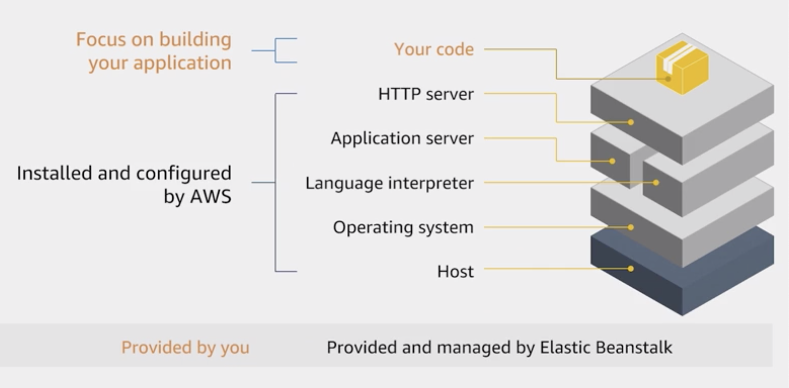
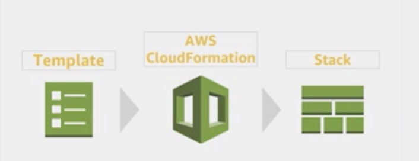

Deployment
Source: AWS CodeCommit
AWS CodeCommit is a fully-managed source control service that hosts secure Git-based repositories.
Build: AWS CodeBuild
AWS CodeBuild is a fully managed continuous integration service that compiles source code, runs tests, and produces software packages that are ready to deploy.
Production: AWS CodeDeploy
CodeDeploy is a deployment service that automates application deployments to Amazon EC2 instances, on-premises instances, serverless Lambda functions, or Amazon ECS services.
CD: AWS CodePipeline
AWS CodePipeline is a fully managed continuous delivery service that helps you automate your release pipelines for fast and reliable application and infrastructure updates.
Monitor: AWS X-Ray
AWS X-Ray helps you debug and analyze your microservices applications with request tracing so you can find the root cause of issues and performance.
Highly Available and Scalable Applications
- Multi-AZ and multiple regions
- Health Check and Failover mechanism
- Stateless application: Store session state in cache server or DynamoDB
- Understand which AWS services can help achieve your goals. For example, Auto Scaling can help you maintain high availability and scalability.
AWS Deployment and Maintenance Services
AWS Elastic Beanstalk
No more worrying about underlying technologies/infrastructure.
Components
- Environment
- Application Versions
- Configuration
Permission Model
- Service Role
- Instance Role

Services used by Elastic Beanstalk to create a web server environment:
- S3 bucket
- Load Balancer
- Auto Scaling Group
- EC2
AWS OpsWorks
Chef recipes: managing multiple layers. Out-of-the-box recipes to support layers that AWS itself does not support.
AWS CloudFormation
Infrastructure as code.
Template
- Define resources to create
- Code your infrastructure in JSON/YAML
Stack
- Create from templates
- Create multiple stacks (in multiple regions) from the same template: StackSet
- Monitor progress of stack updates:
- in progress
- complete
- failed (entire stack will roll back)
